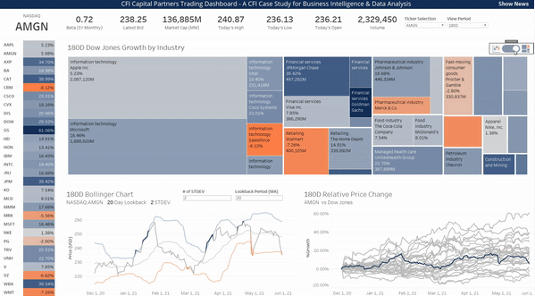

Predicting the likelihood of a client defaulting on a loan is a challenging problem faced by banks, especially when they only have a limited amount of information. To tackle this problem, data science teams at banks often use machine learning to build predictive models. These models are typically trained using proprietary datasets collected internally through the bank's daily business operations. As a result, it can be difficult to find real-world datasets for financial projects like this.

A trading dashboard built with advanced visuals, such as candlestick charts, Bollinger bands, market cap tree maps, growth plots, etc.
The purpose of this analysis is to examine international debt data collected by the World Bank for developing countries. The dataset includes information about the debt owed by these countries in various categories, measured in US dollars. The analysis will seek to determine the total amount of debt owed by the countries in the dataset, identify the country with the highest amount of debt, and calculate the average debt owed by countries in different debt categories.
The Nobel Prize is a widely recognized award presented annually to researchers and scholars in various fields, such as chemistry, literature, physics, medicine, economics, and peace. The prize was first given out in 1901 but has since evolved to be more inclusive and unbiased.